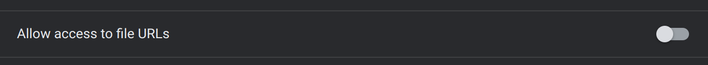

Dextensify: Disabling Admin-Installed Extensions From Any Webpage
by Sasquatch9228 on 07/13/2024
Blog Post Introduction:
Back in May of 2023, LTMEAT was all the rage, letting you disable admin-installed extensions extremely easily. All it required was the use of these two URLs: chrome://kill and chrome://hang.
Unfortunately, when Chrome version 115 rolled around, Google disabled these debug URLs, putting an official end to the exploit's usability. But what if you could find a way to avoid those pesky Chrome URLs?
A Refresher on LTMEAT:
All of the resources that belong to a Chrome extension share the same process. Thus, if any of the extension's pages were to freeze, then the entire extension would also be frozen. The easiest way to achieve this would be to navigate to chrome://hang in the address bar, which hangs the current webpage. However, just simply hanging a Chrome extension has the side effect of also freezing any other event listeners, blocking any other webpages from loading.
To get around this issue, you can kill the extension's process right after you hang it (using chrome://kill), then hang the extension again by using chrome://hang, to prevent the listeners from being registered. By preventing the extension from reloading, then you have functionally disabled it.
Getting Around the LTMEAT Patch:
The patch that Chrome version 115 included simply disabled the use of chrome://kill and chrome://hang (as well as a few related chrome:// URLs), and the underlying issues were not fixed. So how do we accomplish the same things without using any Chrome URLs?
Killing an extension is fairly straightforward. On the details page of an extension in chrome://extensions, there's a switch which toggles an extension's access to file:// URLs. Simply flipping that switch will kill the extension's entire process and forces it to restart.

Hanging an extension is slightly trickier, although just like with the original LTMEAT exploit, a convenient Chrome feature makes this possible.
Web Accessible Resources:
If you've ever viewed an extension's manifest.json, you may have seen a field called web_accessible_resources somewhere towards the bottom of the manifest.jsonfile. The purpose of this is to allow other webpages to view some of the extension's resources. For instance, if an extension contained the following in its manifest, then any path under chrome-extension://extensionidhere/public/ would be accessible to any regular webpage.
"web_accessible_resources": [
"public/*"
]
Any web accessible resources can also be put inside an iframe. However, since all extension resources share a single process, any iframe of an extension resource will be part of the main extension process. Thus, by constantly creating new iframes to a web accessible resource, you can effectively freeze the entire extension. Since you are able to do this from any webpage, this does successfully allow us to bypass the chrome://hang block.
Implementing the Exploit:
Obviously, you can't endlessly create iframes without the entire browser running out of memory and freezing and crashing. Previously created iframes have to be removed, although it's not as simple as just calling .remove() on them. Chrome also doesn't seem to be able to properly garbage collect removed iframes (and when it does, it happens after a delay), which leads to an unavoidable memory leak.
ading2210's workaround for this was to gradually decrease the rate that the iframes were created at so that Chrome's garbage collection has a chance to catch up, and this seems to work most of the time. He then wrote some HTML and CSS code to wrap it all up, as well as a small Python script to generate the data:// URL.
The Final Result:
Here's what the finished exploit page looks like:

It's currently being hosted at dextensify.ading.dev, and the source code is also available on ading2210's GitHub profile.
I am honestly sort of impressed that the workaround to Google's patch is as simple as spamming iframes, but that's just Chrome for you. It happened last time with LTMEAT which was found by Bypassi(Bypassi#7037), and I'm sure more of these simple bugs will be found in the near future.